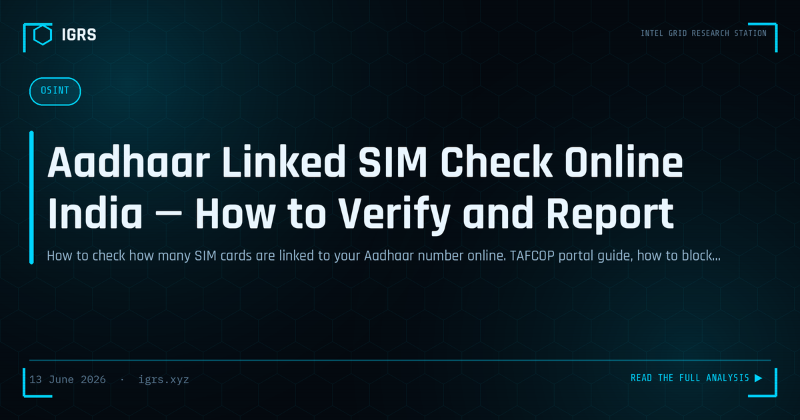

Aadhaar Linked SIM Check Online India — How to Verify and Report
SIM cards registered on your Aadhaar without your knowledge are a growing cybercrime vector in India. These unauthorized SIMs are used for OTP fraud, UPI theft, WhatsApp scams, and digital arrest extortion. The government's TAFCOP portal allows you to check and report unauthorized SIM registrations online.
Why Criminals Register SIMs on Your Aadhaar
- Receive OTPs for bank account takeover using your Aadhaar-linked phone
- Create anonymous WhatsApp accounts for fraud operations
- Register UPI accounts on stolen mobile numbers
- Conduct cybercrime without traceable identity
- Bypass SIM purchase limits by using multiple stolen Aadhaar credentials
How to Check Aadhaar-Linked SIMs — Step by Step
Method 1: TAFCOP Portal (Recommended)
- Visit sancharsaathi.gov.in
- Click "Know Your Mobile Connections"
- Enter your active mobile number (the one you are using)
- Enter OTP received on that number
- View all SIM connections registered to your Aadhaar
- For each number you do not recognize: click "This is not my number" → Submit report
Method 2: DoT Helpline
Call 14422 — DoT's telecom consumer helpline. Provide your Aadhaar number (last 4 digits) and request a list of registered connections.
Maximum SIM Limit per Aadhaar in India
| Region | Maximum SIMs |
|---|---|
| All India (except special zones) | 9 SIMs |
| Jammu & Kashmir | 6 SIMs |
| Northeast states | 6 SIMs |
How to Block Unauthorized SIMs
- Report on TAFCOP — "This is not my number" for each unauthorized SIM
- DoT will send notice to the telecom operator
- Operator must verify the SIM within 60 days or deactivate
- For urgent cases: visit telecom operator's nearest store with Aadhaar
- File complaint on cybercrime.gov.in if SIM was used for fraud
If Your Aadhaar Was Misused for SIM Fraud
- File complaint at cybercrime.gov.in and 1930
- File complaint with UIDAI at uidai.gov.in/contact-support.html
- Request Aadhaar lock at myAadhaar.uidai.gov.in — prevents biometric authentication
- Applicable sections: S.66C IT Act (identity theft), S.318 BNS (cheating)
Prevention Tips
- Check TAFCOP every 6 months as routine hygiene
- Lock your Aadhaar biometrics when not in use — unlock only for KYC
- Never share Aadhaar OTP with anyone — UIDAI and telecom companies never ask for OTP over phone
- Use Virtual ID (VID) instead of Aadhaar number where possible
Frequently Asked Questions
How do I check how many SIM cards are registered on my Aadhaar?
Visit sancharsaathi.gov.in and use the 'Know Your Mobile Connections' feature. Enter your active mobile number, verify with OTP, and you will see all SIM cards registered to your Aadhaar across all operators.
What is the maximum number of SIM cards allowed per Aadhaar?
Maximum 9 SIM cards can be registered per Aadhaar across all operators in India. In Jammu & Kashmir and Northeast states, the limit is 6 SIMs. More than the limit indicates fraud.
What to do if someone has registered a SIM on my Aadhaar without my knowledge?
Report each unauthorized SIM on TAFCOP (sancharsaathi.gov.in), call DoT helpline 14422, file complaint on cybercrime.gov.in, and lock your Aadhaar biometrics at myAadhaar.uidai.gov.in to prevent further misuse.